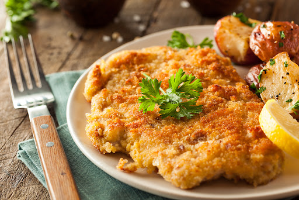

Home
Receta Milanesas de Pollo

Descripcion
Ricas pechugas de pollo empanizadas con pan molido
Ingredientes
- 1 taza de pan molido
- 2 huevos, ligeramente batidos
- 4 pechufgas de pollos
- 4 cucharadas de aceite vegetal
Preparacion
-
Remoje el pollo en el huevo batido y cubralo completamente con el pan
molido
-
Calienta el aceite en una sarten antiadherente de 12 pulgadas a fuego
medio alto y fria el pollo., volteandolo una solo vez, hasta que este
bien cocisdo y dorado,. unos 5 minutis